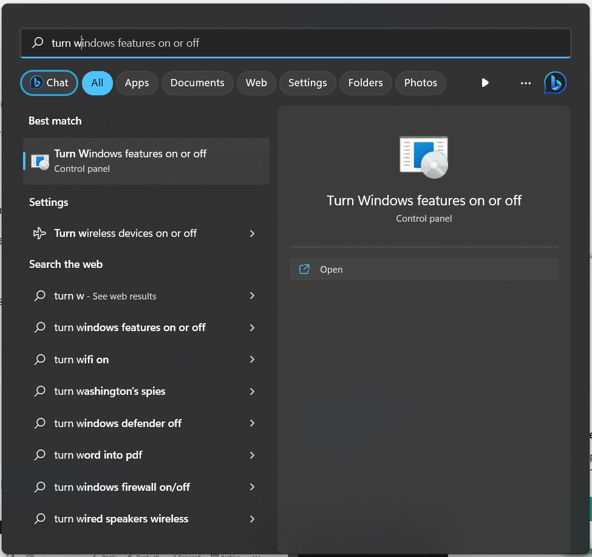
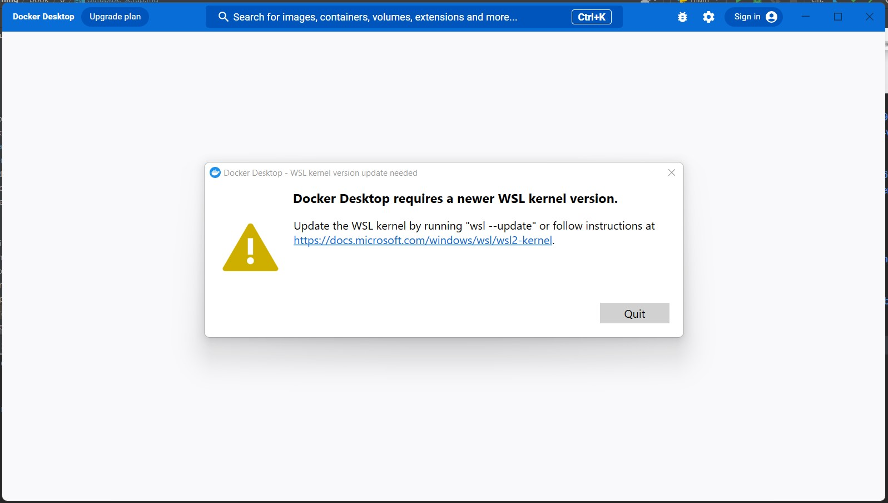

Database Setup Notes
Contents
Database Setup Notes¶
NoSQL Database¶
The database of choice that I decided to adopt in this category was ElasticSearch.
Options for reading this article
A lot of trial and error took place to get to my installation solution over a period of almost 3 months.
If you wish to fast-forward to how I installed ElasticSearch successfully, read Attempt 3.
If you wish to learn more about my journey, keep reading the next section.
Local ElasticSearch setup¶
Based on the page where one could get started, I went to their download page.
I decided to first set it up locally on my Windows.
Docker setup on Windows: my experience¶
Elasticsearch runs within a Docker container, so I went here to download Docker Desktop.
If you directly attempt to install Docker Desktop, you get the following error:

As per the guidance in this article I managed the Windows Management Instrumentation (WMI) by entering my Command Prompt and running the commands below:

I then rebooted and voila!

However when I started Docker, I got the following notice:

So as per the advice in these 2 articles (here and here), I ran the following commands in Windows Powershell as an admin:
However, due to the error shown, I had to navigate to control panel “Turn Windows Features on or off” and select the checkbox for the feature pointed at (as you can see, it was off):


Once I checked it and the update finished installation, I got the following prompt to restart my machine:

To turn on Virtualization in the BIOS menu, as per this article,
when restarting the computer, press esc and F10 until you access the black screen appears click F10 to enter the BIOS menu.
Once in the BIOS menu, navigate to the Virtualization option and select Enable.
When opening Docker again, I got a new error:

When I went to this link, I ran the
wsl.exe --update command in Powershell as an admin like so:

Voila! The docker engine can now run.

To configure memory to 4 GB as per the ElasticSearch README file in the installation package,
I followed this resource,
this resource and
this resource
to create a .wslconfig file.
I then ran the following commands:

This caused the following prompt to appear:

Once I clicked Restart, the WSL debugger and Docker opened and ran the updates from the .wslconfig file like so:

Warning:
Update: When I attempted to open docker in a new session after restarting and effecting the configuration settings, I was unable to start Docker (both normally and as an admin). I was forced to do a Factory Reset to get Docker up and running once more.
ElasticSearch Setup¶
In the virtual environment of my project, as per the ElasticSearch README file in the installation package I ran the following commands:
docker network create elastic
docker pull docker.elastic.co/elasticsearch/elasticsearch:8.8.2
This enabled me to install ElasticSearch successfully, as per the status below:
For my purposes, I only installed ElasticSearch and Kibana.
Warning:
As per these instructions, I installed components in the following order:
ElasticSearch:
docker pull docker.elastic.co/elasticsearch/elasticsearch:8.8.2
docker network create elastic
docker run --name elasticsearch --net elastic -p 9200:9200 -p 9300:9300 -e "discovery.type=single-node" -t docker.elastic.co/elasticsearch/elasticsearch:8.8.2
Kibana:
docker pull docker.elastic.co/kibana/kibana:8.8.2
docker run --name kibana --net elastic -p 5601:5601 docker.elastic.co/kibana/kibana:8.8.2
16.08.2023 Update:
However, it was very difficult to replicate results, and wsl (Linux in a Windows environment) is not a debugging platform.
This meant that for almost 2 weeks, my Windows machine was hanging, and security components for ElasticSearch did not automatically
install, making it impossible for the enrollment code needed by Kibana to be generated.
For this reason, I decided to install ElasticSearch and use it in a Virtual Private Server.
Virtual ElasticSearch setup¶
Attempt 1¶
My first attempt was guided by this article.
The first error I came across was (even after successfully running ElasticSearch and Kibana on the server)
having empty responses from the server and not being able to connect to the server internally
as shown by the screenshots below:


Lessons Learnt after the 1st attempt
The default setup of elasticsearch creates self-signing certificates making it difficult to user
curlto connect.If you attempt to access the database from the command line, it may require addition configurations to your VPS.
Attempt 2¶
I then attempted to set up ElasticSearch as a package within the server itself instead of installing from the archive as per this article and this article.
The first error I came across was this one:

I used this article, this article and this article to resolve the problem, as shown below:


Run once more:
sudo nano /etc/apt/sources.list.d/droplet-agent.list
The service install for both elasticsearch and kibana went smoothly from that point as shown below:


However, I ran into the same problem faced in attempt 1:


Lessons Learnt after the 2nd attempt
Just because Elasticsearch is running in the system does not ensure that you can actually connect to the database.
Attempt 3¶
In my final (and successful attempt) I set up ElasticSearch within Docker on the server itself as per this article, this article and this article as shown below: